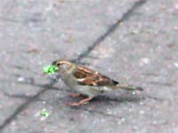
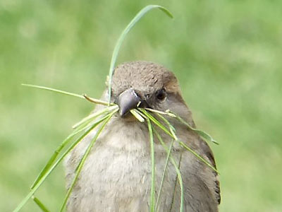

Воробьи строят гнездо

Воробей
хватает
новую гусеницу, не
теряя предыдущих.
Однажды я сфотографировал издалека, как воробей набрал в клюв много зелёных гусениц. Он понимает, что делает. Не ест их сразу, а собирает, чтобы отнести в гнездо деткам. На этом фото похожая картина. Молодая семья воробьёв собрала травинки для постройки гнезда. Они не просто хватают травинку и несут в гнездо. Они набирают их полный клюв.
